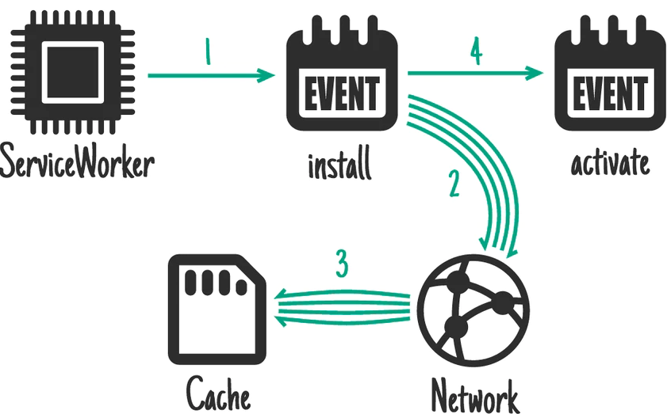
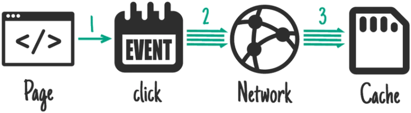
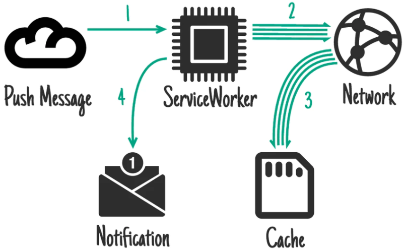
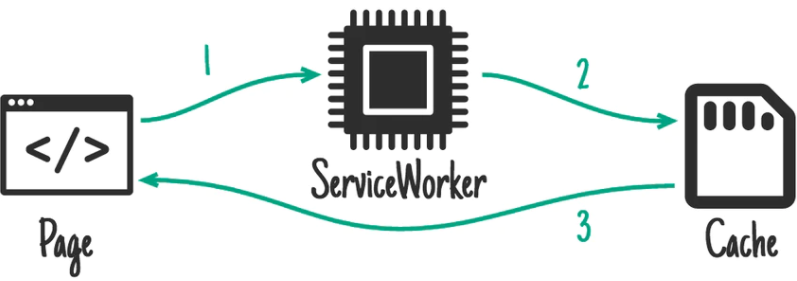
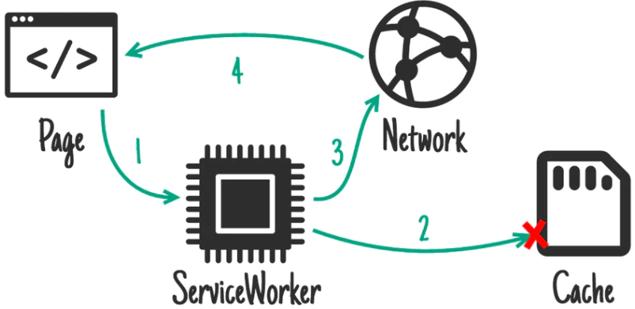
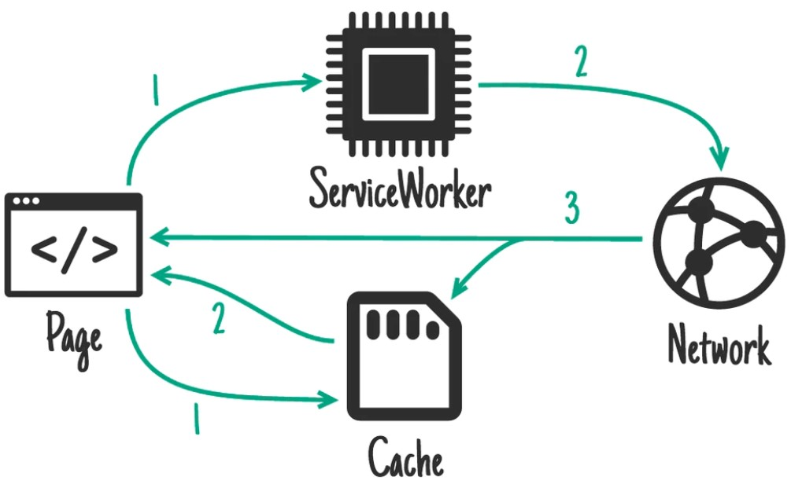

Neben der Frage, welche Daten gecached werden sollen, muss ebenfalls überlegt werden, wann die Daten gecached werden sollen und wann diese Daten bereitgestellt werden bzw. wann auf die Assets im Cache zugegriffen wird.
Dafür gibt es viele verschiedene Strategien, die für verschiedene Anwendungsbereiche sinnvoll sind.
Von diesen werden im folgenden drei beliebte Strategien kurz vorgestellt.
Beim installieren cachen:
Bei dieser Strategie werden beim install-Event die Caches erstellt und die festgelegten Assets hinzugefügt.
Die Strategie ist sinnvoll für statische Inhalte, die sich selten ändern und fügt die Daten zu dem Zeitpunkt zum Cache hinzu, wenn der ServiceWorker installiert wird.

Quelle: https://web.dev/offline-cookbook/
Bei Nutzerinteraktion cachen:
Diese Strategie ist bei sehr großen PWAs sinnvoll, da der Nutzer selbst bestimmen kann, welche Daten gecached werden sollen.
Das macht besonders sinn, wenn es um Artikel einer Onlinezeitschrift oder um Videos einer Plattform geht.

Quelle: https://web.dev/offline-cookbook/
Bei Push-Benachrichtigung cachen:
Bei dieser Strategie wird der Cache mit Daten gefüllt, sobald der Nutzer eine Push-Benachrichtigung erhält.
Dabei werden meistens nur Daten gespeichert, die mit der Push-Benachrichtigung in Verbindung stehen, wie beispielsweise Chat-Nachrichten oder E-Mails.

Quelle: https://web.dev/offline-cookbook/
Wichtig:
Sind die Daten einmal im Cache und es soll eine Änderung vorgenommen werden, so muss neben der Veränderung des Inhalts auch eine Veränderung vom ServiceWorker stattfinden,
damit diese in den Cache übernommen wird.
Das geht am besten, indem die Caches versioniert werden:
Das liegt daran, dass nur eine vorgenommene Änderung im ServiceWorker das install-Event erneut auslöst und somit den Cache des Browsers erneuert,
sprich mit den neuen Inhalten füllt.
Alle weiteren Strategien zum cachen von Assets sind hier zu finden.
Strategien zur Bereitstellung der Daten
Nachdem die Cache-Strategie festgelegt wurde, ist es ebenfalls äußerst wichtig festzulegen,
wie der Browser nun mit den Daten im Cache und den Netzwerkdaten umzugehen hat.
Dafür werden ebenfalls drei Strategien zur Verdeutlichung der Thematik kurz vorgestellt
Nur Cache:
Bei der "nur Cache"-Strategie werden alle Assets lediglich aus dem Cache entnommen.
Das macht Sinn, wenn die Webseite aus statischen Inhalten besteht, die sich nur sehr selten bis gar nicht verändern.

Quelle: https://web.dev/offline-cookbook/
Cache, Netzwerk-Fallback-Strategie:
Bei dieser Strategie werden die Daten in erster Instanz aus dem Cache entnommen.
Sind diese nicht vollständig oder fehlen ganz, wird auf die Netzwerkverbindung zurückgegriffen.
Diese Strategie wird auch "offline first"-Strategie genannt, da der Fokus auf den im Cache gespeicherten Asstes liegt.

Quelle: https://web.dev/offline-cookbook/
Cache, dann Netzwerk:
Die "Cache then Network"-Strategie ist ideal für Webseiten, deren Inhalte sich häufig verändern.
Sie besteht aus zwei seperaten Anfragen.
Als erstes werden die Inhalte aus dem Cache dargestellt.
Gleichzeitig wird eine Netzwerkanfrage gesendet, die die gleichen Inhalte vom Webserver anfragt.
Sobald die Inhalte der Netzwerkanfrage eintreffen, werden sie sowohl im Cache als auch auf der Nutzeransicht ausgetauscht.

Quelle: https://web.dev/offline-cookbook/
Alle weiteren Strategien zum Bereitstellen der Assets aus den Caches hier zu finden.